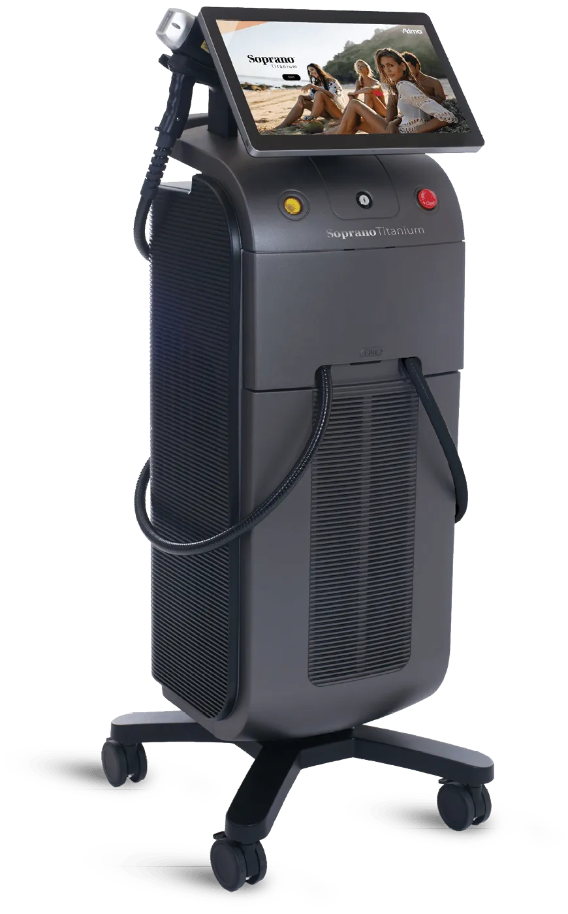
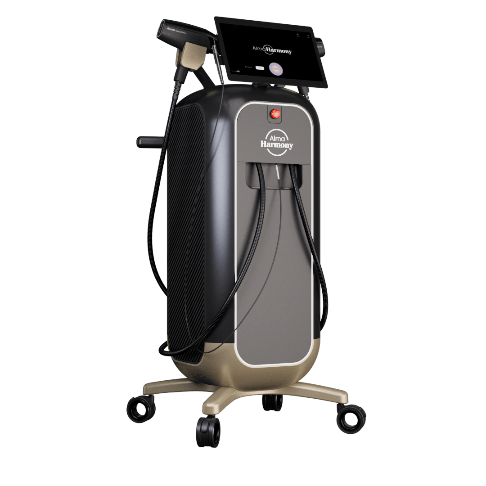
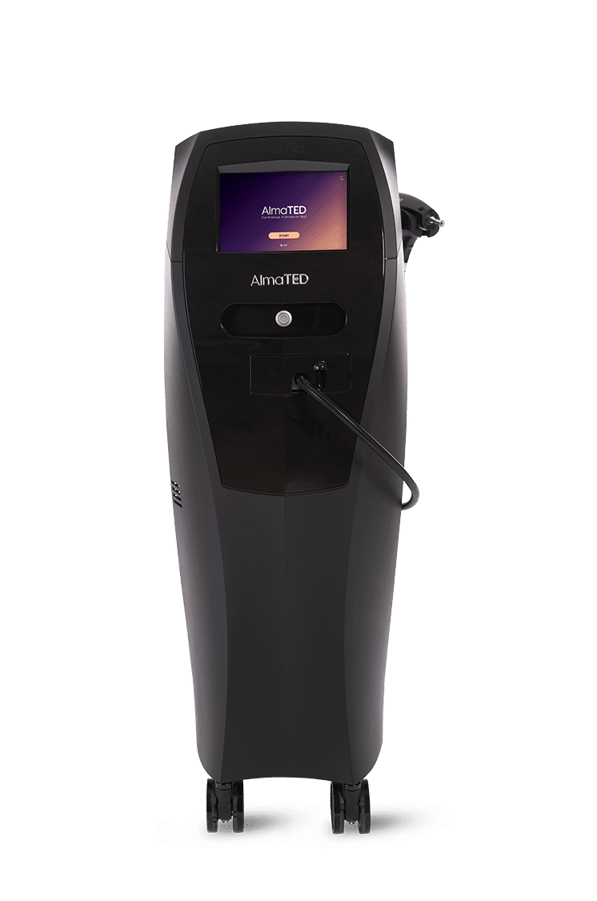

❄️
ICE Plus cooling
A chilled sapphire tip and continuous contact cooling protect the surface of the skin while therapeutic heat builds in the dermis — so sessions stay comfortable without numbing cream.
Painless · Powerful · Permanent

The ice has melted away
What remains is a triple-wavelength diode platform for fast, comfortable, permanent hair reduction — across every skin tone, even tanned skin, all year round.
Book a treatmentThe device
A chilled sapphire tip and continuous contact cooling protect the surface of the skin while therapeutic heat builds in the dermis — so sessions stay comfortable without numbing cream.
755, 810 & 1064 nm fire together through the TITANIUM applicator, reaching the bulge, bulb and papilla of the follicle to treat every hair depth and colour in a single pass.
A large 4 cm² applicator with a glide-and-pulse (SHR) technique covers more skin per second — most areas are finished in under fifteen minutes.
FDA-cleared and safe across the full Fitzpatrick range (I–VI), including darker and tanned skin — treatment isn't limited to winter.
The treatment
Hair grows in cycles, so lasting smoothness usually takes 6–8 sessions spaced roughly 4–8 weeks apart, with occasional top-ups to maintain results.
An upper lip takes a couple of minutes; larger areas like the legs or back are typically finished in under fifteen.
The applicator glides in motion while the tip cools — most people describe a warm-massage sensation rather than a snap, with no numbing cream.
There's no recovery and no peeling. Head straight back to your day — just wear SPF on treated skin that sees the sun.
Beyond hair removal
Also known as Soprano Titanium Lifting, this non-invasive treatment sends the same three wavelengths deeper — from the dermis toward the SMAS — to gently heat the tissue and trigger fresh collagen, for skin that looks firmer, tighter and visibly lifted.
For You. For Life.
Painless laser hair removal and the Titanium Lift.

A multi-application platform for skin revitalisation.

Acoustic, needle-free treatment for hair & scalp.